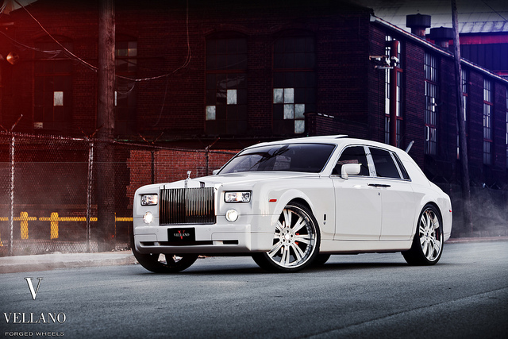
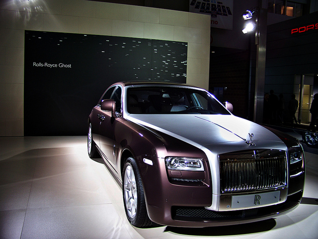

Phantom
The Phantom was introduced around 1925 and discountinued in 2016. The Rolls Royce Phantoms went from generation to generation with a Roman Numeral numbering from I to VII. The Phantom also introduced a Drophead Coupe and Coupe as well as the original. The Rolls Royce Phantom was often used in Movies, such as James Bond, Tony Stark in IronMan, and many others.

Ghost
The name Ghost came in honour of the Silver Ghost. Silver Ghost was produced around 1906. During the development of the ghost, it was originally known as RR04. It was designed to be a smaller car than the phantom. The Phantom was first produced in 2010 and production is still continued. The predecessor to this is the Silver Seraph.